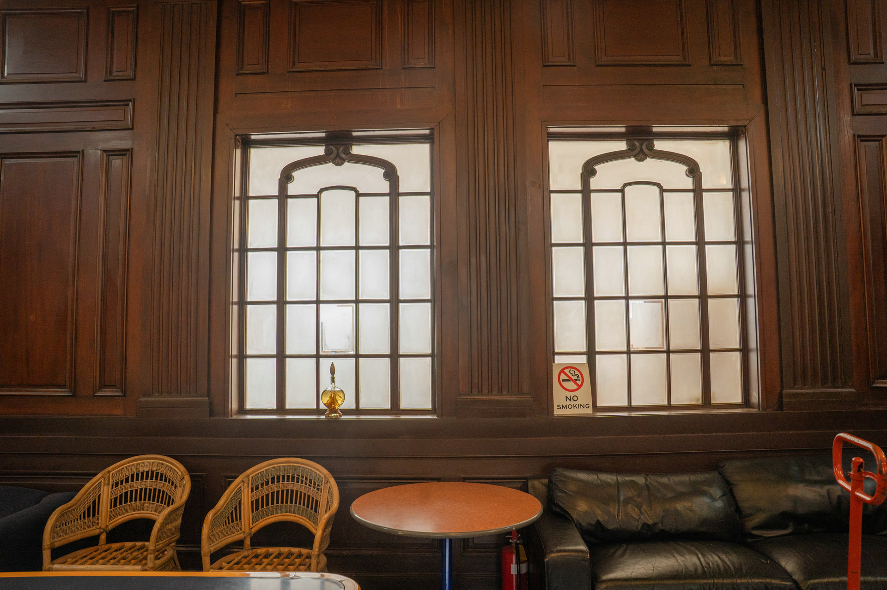
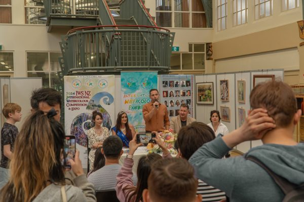

A working creative community
Independence with connection
The Art Share Space is designed for independent artists, designers and creative professionals seeking a refined place to work, meet and grow.
Flexible individual and shared arrangements support solo practitioners and small teams, while the heritage setting creates a confident environment for presentations and client meetings.
Workspace features
Flexible, focused, professional
- Individual and co-sharing options
- Creative studios and project-based workspace
- Boutique office and client meeting use
- On-site reception, mail and visitor support
- A central location within an artistic heritage building
Inside the space
Room to work and exchange ideas




Find your workspace
Discuss an arrangement that suits your practice
Tell the team about the way you work, the space you need and your preferred timing.